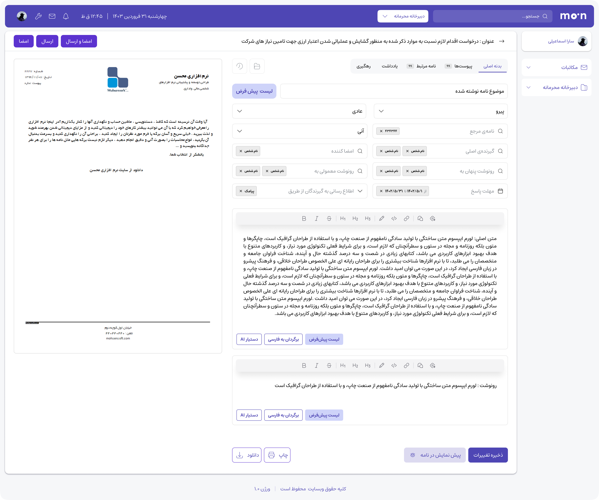
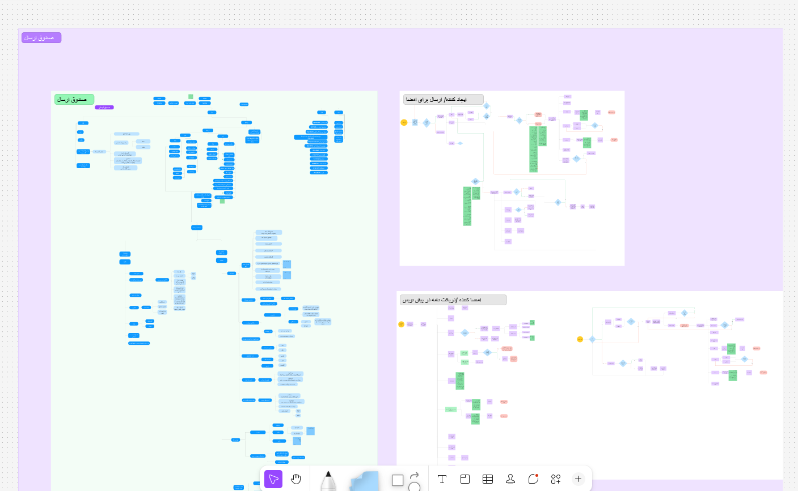
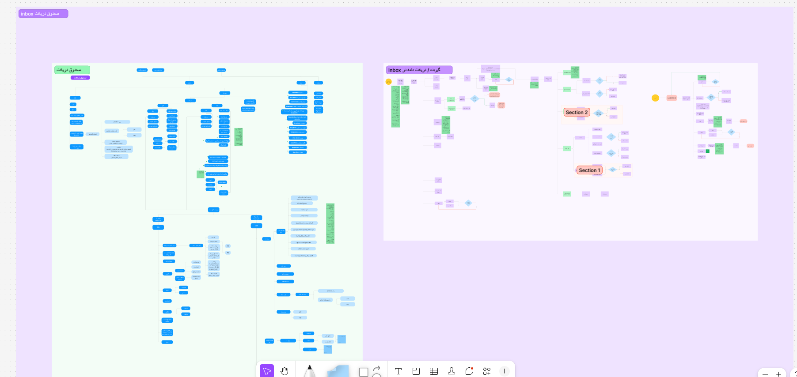
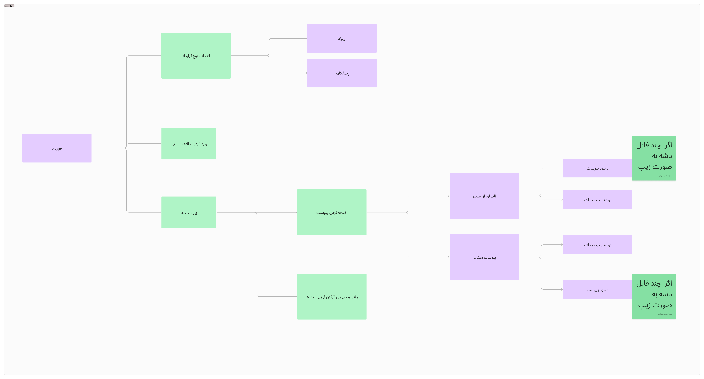
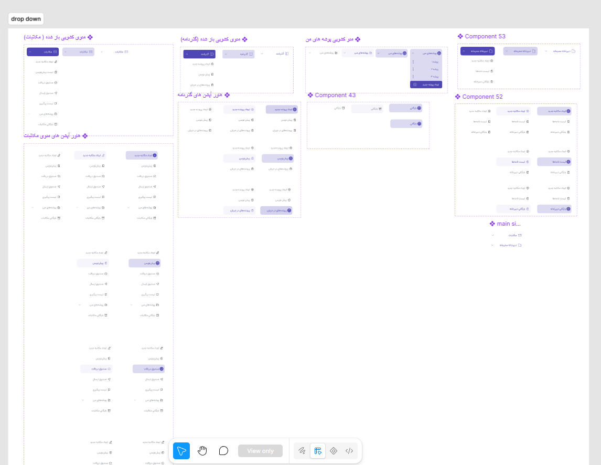
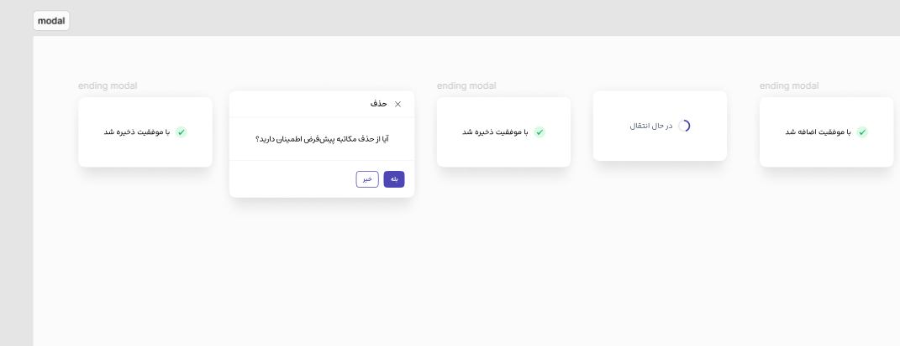
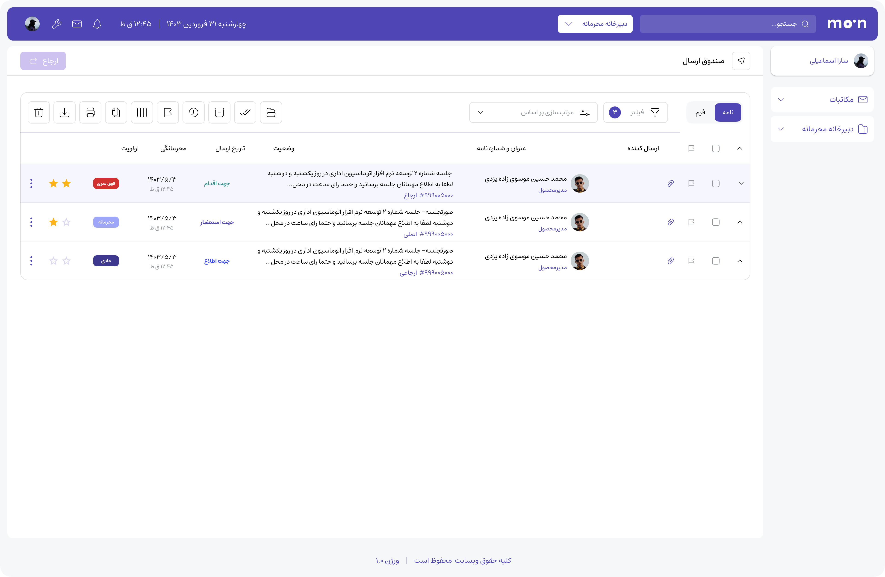

CASE STUDY / 03 · 2023–2025
NovinParva
Office Automation
Turning a complex correspondence system into clear, digital work paths.

01 / OVERVIEW
From paperwork to predictable paths.
NovinParva’s office-automation product was designed to replace fragmented, traditional letter correspondence with a connected digital workflow. The system was highly complex, with different routes for creating, reviewing, signing, sending, receiving, and archiving documents.
- My role
- Product Designer
UI/UX Designer - Ownership
- End-to-end flow simplification, site map, user flows, wireframes, UI, and design system.
- Company
- NovinParva
Full-time · On-site - Timeline
- Jun 2023 — Sep 2025
~7 months flow work
02 / THE CHALLENGE
Many scenarios, one system.
The existing product carried years of organisational rules and exceptions. A single request could branch into different approvals, attachments, recipients, and follow-up actions. The goal was to make each scenario understandable without removing the control organisations needed.
03 / DESIGN PROCESS
Simplify the system first
I spent the first phase auditing the existing product and mapping its scenarios. Over roughly seven months, I turned the fragmented routes into a shared structure, then designed the interface and reusable components around that structure.
- 01 Audit the existing product
- 02 Map scenarios
- 03 Build the site map
- 04 Detail user flows
- 05 Wireframes
- 06 Design system
- 07 UI design
- 08 Prototype and handoff
01 / SYSTEM MAPPING
A map of the real work
I documented the system’s main areas and the relationships between internal and external correspondence, so later flows could share the same mental model.


02 / USER FLOWS
One flow for every scenario
Each high-frequency scenario was broken into explicit steps, decisions, and outcomes. This reduced hidden branches and gave the team a shared reference for implementation.


03 / COMPONENT BUILDING
Components for complex decisions
I built reusable components and state patterns for dense controls, dropdowns, confirmation moments, and form interactions. This gave repeated tasks a consistent behaviour before the complete interface was assembled.


04 / UI & DESIGN SYSTEM
Components that carry the rules
I translated the approved flows into a reusable component system for navigation, filters, forms, status, document previews, and workflow actions. The system kept complex screens consistent as the product grew.


04 / OUTCOME
A calmer way to move documents.
The redesigned structure gave each office-automation scenario a clearer beginning, middle, and end. Teams could understand where a document was, what action was needed, and which route came next.
The work also established a shared UI language: reusable components and states made future screens faster to design and easier to maintain.
05 / REFLECTION
Complexity needs choreography.
NovinParva reinforced that enterprise product design starts with the system’s logic. Clear maps and scenario flows made the final interface simpler, more consistent, and easier to trust.